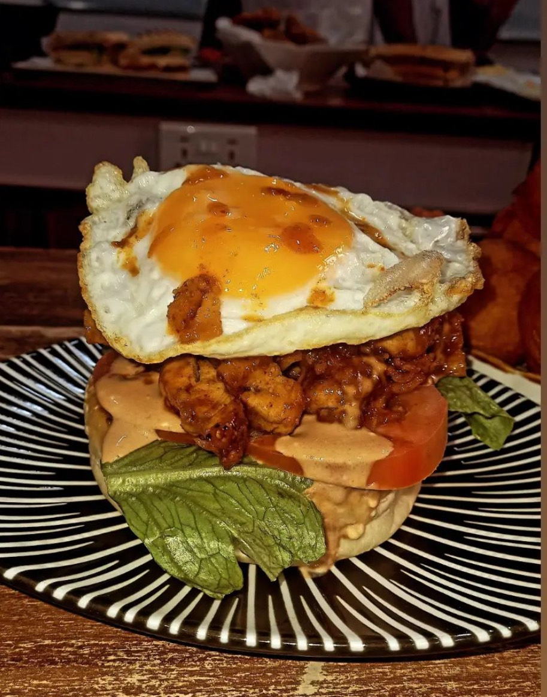

Introduction to My Hobbies
I have a passion for both cooking and photography. These hobbies allow me to express my creativity and bring joy to myself and others.
Cooking
Why I Love Cooking
- Experimenting with new recipes and ingredients.
- Creating delicious meals for family and friends.
- Exploring different cuisines and cultures.
Favorite Recipes
- Jollof Rice
- Alfredo Pasta
- Waffles and Icecream 
- Capturing beautiful moments and scenes.
- Exploring new places and landscapes.
- Expressing creativity through visual art.
- Use natural light whenever possible.
- Experiment with different angles and perspectives.
- Keep your equipment clean and ready.